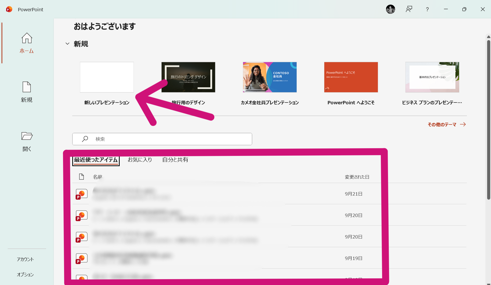
もし、最近開いたファイルに該当のものがない場合は、左のバーにある「開く」からファイルを探して開いてください。
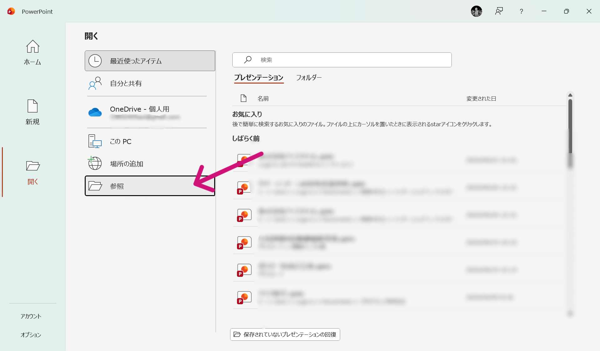
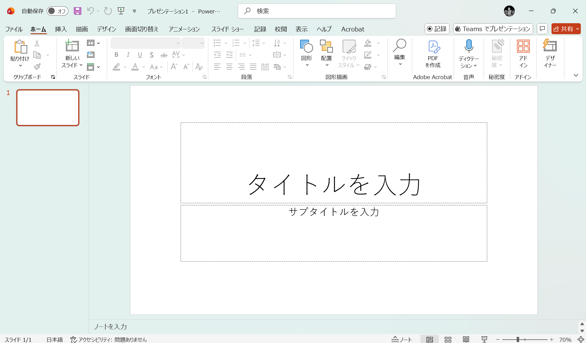
スライドとは1枚1枚の紙のことです。パワーポイントでは一つのファイルの中で、複数の箱を作ってそれぞれの内容を編集することができます。スライドの概念は、本のページをイメージするとわかりやすいです。画面左側にスライドが表示されるので各ページを選んで編集を行います。
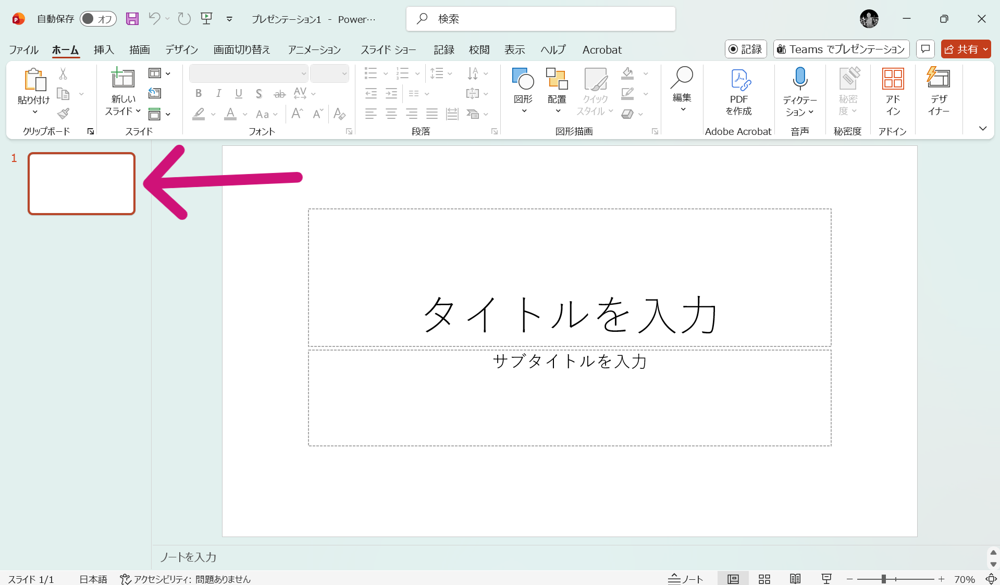
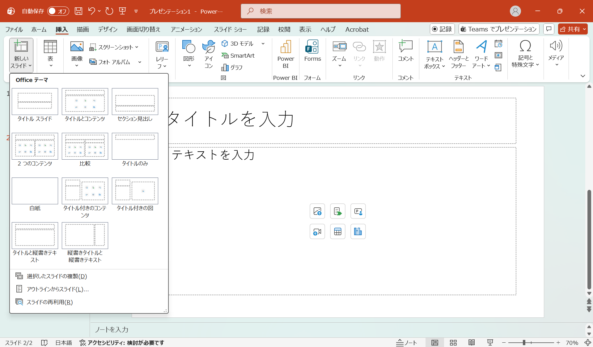
テンプレートなどを作る際は一枚目で雛形を作成して,それを複製して使うと効率的です。
パワーポイントでは文字を テキストボックス と呼ばれる 文字専用の箱の中にのみ入力することができます。初期はスライド（紙）の中に、タイトルとサブタイトルの2つのボックスが用意されています。
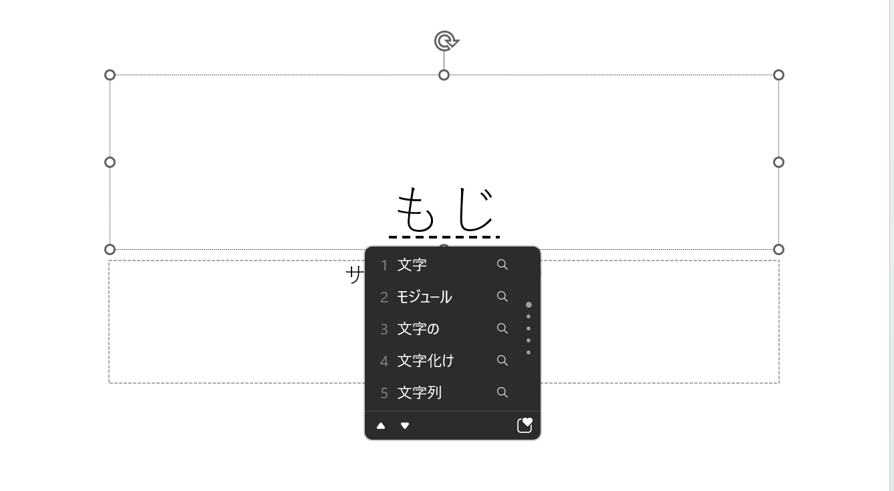
文字を選択すると、選択されているところがグレーや青色に変わるので、正しく選択できているか確認してから色を変えましょう。
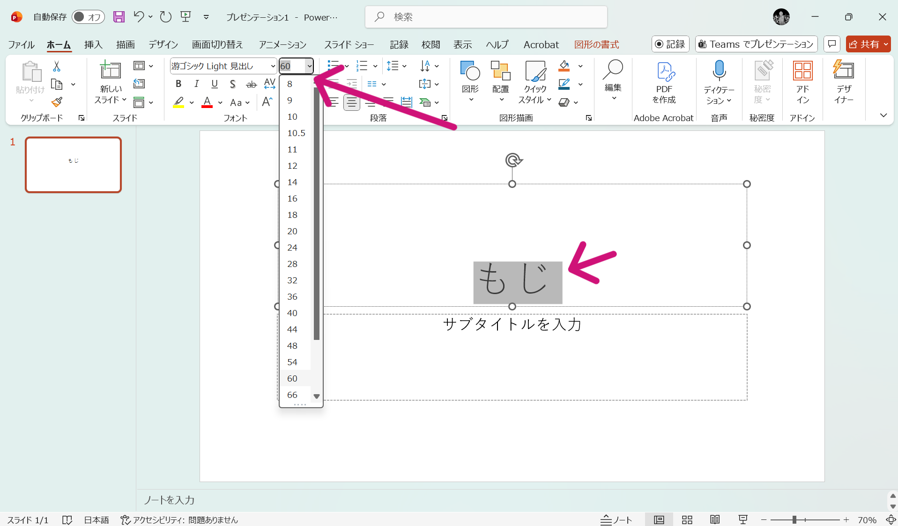
パワーポイントではマウスカーソルの形によって操作内容が変わります。例えば、文字を選択しているときはカーソルがIの形になり、移動するときは十字の矢印になります。
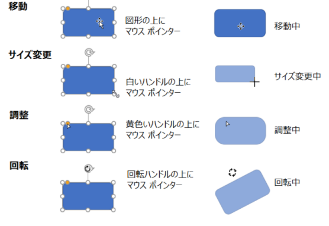
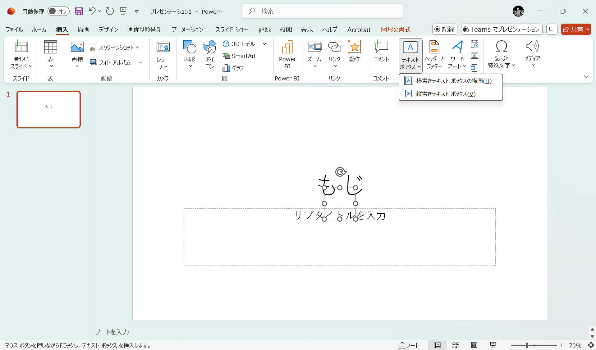
画像の挿入方法は様々あります。ここでは一般的な方法を紹介しますが、画像をスライドするドロップ＆ドラッグも可能です。
コントロールキーを押しながら画像を選択することで、複数の画像を一気に追加できます。
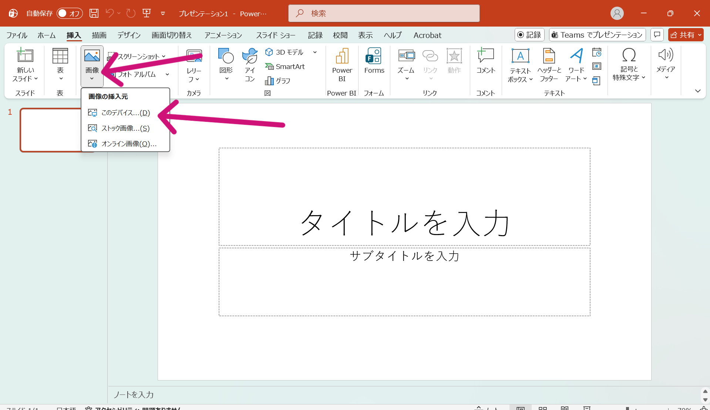
パワーポイントでは、すべてのスライドを編集し終えてからまとめて保存しましょう。
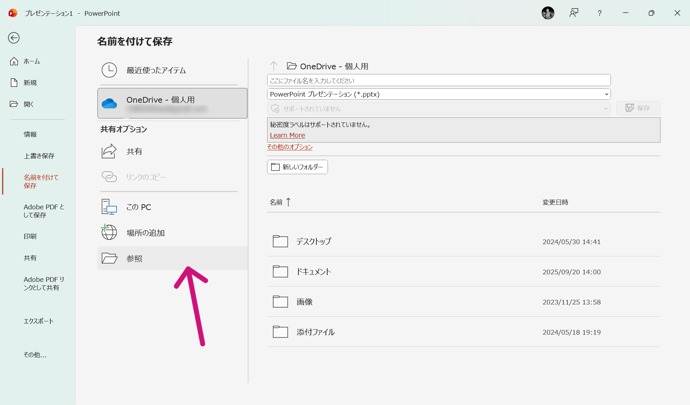
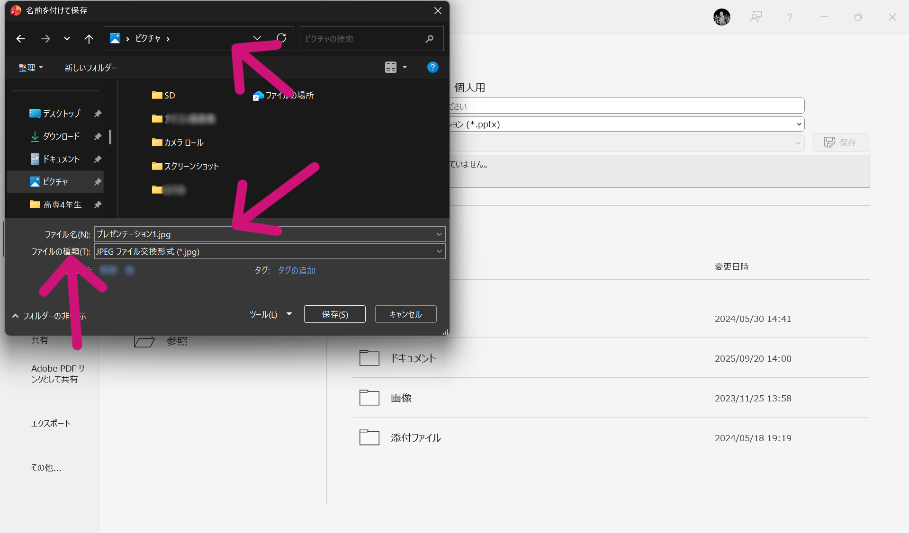
パワーポイント形式での保存は1度この設定を行うと、2回目以降はコントロールキーとSで上書き保存ができます。